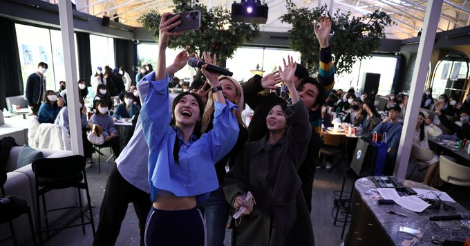

Some representative placeholder content for the second slide.
China increases defence spending by 7.2%
China’s government on Sunday announced a hike in defence spending by 7.2% to $225 billion in 2023, saying the rise was needed to deal with “complex security challenges”. Beijing also announced a lower than expected growth target of “around 5%” for the year, as the National People’s Congress (NPC), or Parliament, convened for its annual session in the capital. Outgoing Premier Li Keqiang delivered his last report to the NPC on Sunday morning. The session will conclude on March 12, with Mr. Li set to be replaced by a close ally of President Xi Jinping, Li Qiang, who was promoted as the second-ranked leader of the Politburo at the ruling Communist Party’s once-in-five-year congress in October 2022. The NPC is a largely ceremonial legislature that endorses party policies as well as approves government appointments. This year’s session, which marks the end of Mr. Li’s second five-year term, will see sweeping changes across government ministries with officials set to be appointed for the next five years. Mr. Li, in his last work report to the NPC, announced an economic growth target of “around 5%” for 2023. Last year, the economy failed to meet its 5.5% target, growing by 3% as it struggled with the impact of the “zero-COVID” policy, which was finally withdrawn in December.
South Korean romance reality shows boom, but marriage no longer the end game

South Korean disaffection with marriage and having children is underscored by grim statistics: the number of newly married couples has slid 23 per cent in the past five years and the country has the dubious distinction of having the world's lowest fertility rate.
If South Korea's big boom in dating and relationship reality TV shows is anything to go by, the country's interest in romance has never been greater.
At least 20 such shows aired across the country's cable TV networks and video streaming platforms last year, more than triple the number in 2021, according to a Reuters tally.
There's a plethora of shows matchmaking young single people, but also, notably, a growing number highlighting South Korea's increasing acceptance of non-traditional relationships that don't revolve around marriage and starting a family.
"Living Together without Marriage", for example, focuses on couples who have chosen not to tie the knot and "His Man" is one of two shows featuring LGBTQ people. Other shows throw the spotlight on divorced people searching for love again.
The trials and tribulations of dating and relationships - perennial fodder for TV content in most cultures - take on particular weight in South Korea. Here, the popularity of marriage as well as enthusiasm towards parenthood has nosedived. Sharp gender inequality and the sky-high costs of rearing children are widely blamed.
Kim Jin, the chief producer of "Living Together without Marriage", says the show, which premiered in January, does not intend to advocate unmarried cohabitation or discourage marriage, but spark debate.
"By showcasing these couples' lifestyles and the reasons behind their decision, we wanted to bring the topic to the fore of society," she told Reuters.
While official statistics on their numbers are not kept, unmarried couples living together no longer raise eyebrows in South Korea. That said, having kids outside of marriage is a step few Koreans would contemplate.
Whether to marry or not has been a source of tension for Cho Sung-ho and Lee Sang-mi, a couple of more than 10 years featured on the show.
For 32-year-old Lee, a model, the decision to live together unmarried was a deliberate choice not to be bound by tradition. She's not eager to have children, saying it would be "impossible in reality" to be a good mother and stay true to herself.
"I am most comfortable with how it is now, and don't quite get why I should get married and have more obligations such as visiting both sets of parents in the holiday season," Lee said.
Cho, also 32, still hopes for marriage and children, although the former K-pop idol turned YouTuber says he understands Lee's reluctance given that women usually bear the greater burden in child-rearing.
Who is Vijayapriya, Nithyananda's disciple who represented 'Kailasa' at UN
The video of a woman in saffron clothes, a headful of dreadlocks, tika on the forehead and a rosary of rudraksh around her neck giving a speech in English at the Geneva office of the United Nations grabbed everyone's attention.
The veil of mystery surrounding the woman was lifted when her photo was posted on fugitive rape-accused Nithyananda's Twitter handle.
Nithyananda, who is facing rape and kidnapping charges and is absconding from the police in India, has been putting on a show on the global stage.
Nithyananda claimed to have created a country named 'United State of Kailasa', where people allegedly lead their lives according to Hindu beliefs.
Now, the fugitive godman has sent a delegation from his 'virtual sovereign state' to a United Nations conference under the leadership of a woman. Nithyananda is promoting this through all his social media accounts.
Despite Nithyananda's lofty claims of establishing an "independent nation" of his own, there is no evidence to prove its actual existence.
This week, statements from his self-proclaimed 'virtual sovereign state' — the United States of Kailasa — suggested that it was represented at the United Nations by 'Ma Vijayapriya Nithyananda', who they claim is their "Permanent Ambassador of Kailasa to the UN".
The United Nations organised a conference on the 19th Economic, Social and Cultural Rights in Geneva on February 24.
At a general discussion on Sustainable Development held by the Committee on Economic, Social and Cultural Rights (CESCR) on February 24, two people spoke during the part of the session open to the public claiming to be from the "United States of Kailasa".
The United Nations on Wednesday said the inputs provided by the 'Kailasa' representatives would not be taken into consideration.